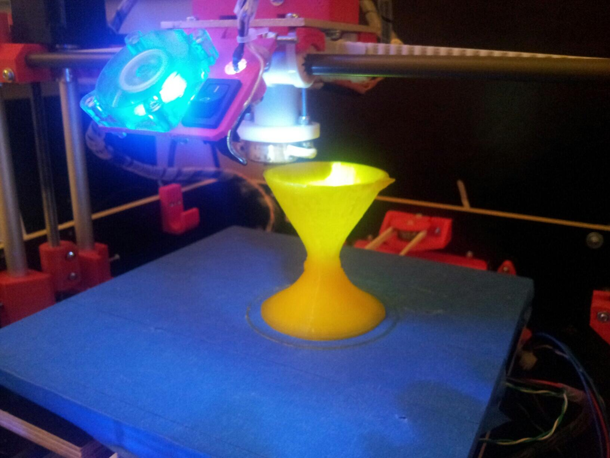
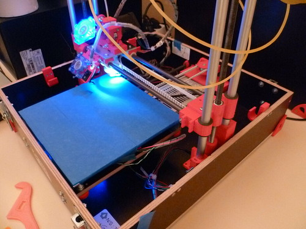

29 janvier 2014
Les 24h du code - 2014
Le weekend du 25 et 26 janvier, se sont déroulées les 24h du code à la chambre de commerce et d'industrie au Mans. Durant ce weekend les 30 équipes inscrites ont du plancher sur les quatres sujets proposés :
- Cartes communicantes « intelligentes » ;
- Modélisation d'un Game & Watch ;
- Intelligence artificielle pour un RPG ;
- Application web de gestion de données libres de transports.
J'étais présent à cet événement en compagnie de Alexandre Lissy en tant que jury pour ce dernier sujet proposé par Mozilla. L'enjeu était donc de produire une application web (compatible Firefox OS) capable de gérer des données au standard GTFS (General Transit Feed Specification). 6 équipes ont choisi de travailler sur ce sujet.

Elles ont pu découvrir grâce au Geeksphone Peak et aux outils développeurs le monde de Firefox OS et des Web APIs.Toutes les équipes ont réussi à importer les données open-data de Rennes (Le Mans ne dispose pas encore de données GTFS) et à afficher les lignes de transports (bus/tramway) sur une carte.
Mais c'est l'équipe « Supercalifragilisticexpialidocious » (hommage à Mary Poppins ?) qui a remporté la compétition en proposant un projet (client/serveur) capable de gérer un calcul d'itinéraire en affichant des tracés sur la carte. Leur projet repose sur un serveur Tomcat avec Java/Spring, tandis que le client est développé bien entendu en HTML/JavaScript/CSS/JQuery.
Parmi les autres groupes participants, certains ont opté pour une application seulement cliente (pratique pour gérer un mode hors-ligne plus tard).
Vous pouvez retrouver l'ensemble du code source des différents groupes :
- Supercalifragilisticexpialidocious : https://github.com/lbroudoux/24hducode-2014
- BeeMobile : https://github.com/edrichard/24hducode
- À venir pour les autres...
Autre point qui m'a agréablement surpris : l'impression 3D des « trophées » remis :)


Toutes les photos de l'événement sont disponibles sur mon album Flickr. On remercie bien entendu les organisateurs des 24h du code et plus particulièrement Vincent Jousse de nous avoir invités !
Commentaires 1